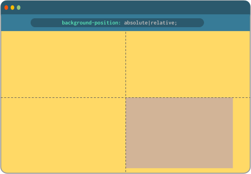
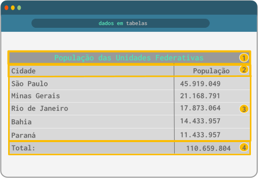
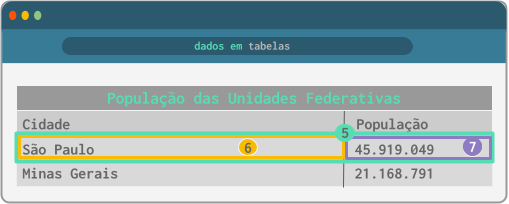
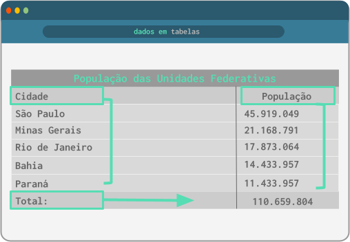

Nesta seção está o conteúdo aprendido no terceiro módulo do curso de HTML5 e CSS3. Com seus principais conceitos e aplicações práticas.
Conteúdo das Aulas
Capítulo 18
Git e GitHub
O Git é entendido como um software de gerenciamento de versões dentro do próprio computador do usuário (repositório local). Trata-se portanto, de uma ferramenta de versionamento de código, ou seja, muitas versões de uma mesma coisa. Já o GitHub é o repositório remoto que permite o compartilhamento dos repositórios locais. É nele que é possível armazenar e compartilhar outros repositórios. O GitHub também serve como uma rede social para programadores fazer o compartilhamento seus códigos remotamente. É importante destacar que o GitHub permite o armazenamento de todas as linguagens de programação.


Capítulo 19
Imagens de fundo no background
Quando queremos utilizar uma imagem para o plano de fundo do nosso site, utilizaremos a propriedade (em CSS, por se tratar de uma configuração de estilo e não uma configuração semântica) background-image;.
Veja o exemplo a seguir:
<body>
<div class="quadrado" id="q1"></div>
<div class="quadrado" id="q2"></div>
<div class="quadrado" id="q3"></div>
</body>
div.quadrado {
display: inline-block;
margin: 5px;
width: 300px;
height: 300px;
background-color: #fdf0d5;
border: 2px solid #003049;
border-radius: 20px;
}
Resultando no navegador o seguinte:

Nota:
Observe que a propriedade display: inline-block permitiu que os quatro quadrados ficassem alinhados lado a lado no navegador.
Para adicionarmos configurações individuais para cada quadrado gerado no código acima, utilizaremos os id="" para cada um. De forma geral, temos 3 maneiras simples de fazer o preenchimento de uma caixa em HTML, cor sólida - degradê ou imagem de fundo.
div.q1 {
background-color: #377b97ff;
}
div.q2 {
background-image: linear-gradient (to bottom, #fec57b, #fb9904ff);
}
div.q3 {
background-image: url('imagens/pattern.png');
}

Explorando o background-image
Por padrão, quando a imagem de fundo é menor do que o tamanho da caixa, esta imagem será repetida nos dois eixos do navegador (x,y) quantas vezes for necessário para cobrir a extensão da caixa contêiner. É possível alterar esse comportamento utilizando a propriedade background-repeat
O background-repeat aceita os seguintes valores: repeat; - no-repeat; - repeat-x; - repeat-y;. Veja como cada um deles se comportam na imagem abaixo.

Além das propriedades e valores para o background-repeat, também é possível fazer alterações na posição de referência de início das repetições, o que chamamos de ancoragem. Por padrão, as imagens de fundo ficam ancoradas no canto superior esquerdo (left top) da página. Através da propriedade background-position podemos obter outras oito formas de ancoragem. É importante dizer que estes pontos de ancoragem serão feitos sempre na ordem de colunas e linhas.

Considerando os valores para background-position, tomemos como base a imagem de fundo abaixo.
Agora, aplicando as configurações de background-position, teremos:
Acima foram aplicados os valores, respectivamente, left top - center top - right top. Onde o padrão para esta propriedade é o background-position: left top.
Acima temos os valores de background-position: left center - center center - right center. E por fim, teremos o background-position: left bottom - center bottom - right bottom.
Nota:
Observe que para cada valor atribuído no background-position, a imagem de fundo aparece ancorada em um ponto específico. Esta ferramenta permite um controle mais preciso sobre a posição da imagem de fundo, permitindo ajustes que contribuem para maior acessibilidade dos elementos visuais no site. Além disso, é um importante aliado da responsividade.
Além de ser possível determinar o ponto de ancoragem da imagem do background de um site, podemos também redimensioná-la. Por padrão, não há nenhum redimensionamento predefinido, portanto a imagem usada será aplicada em seu tamanho original. Para fazermos configurações personalizadas do tamanho, utilizamos a propriedade background-size, que aceita os seguintes valores:
Auto: é a configuração padrão, a imagem de fundo será aplicada em seu tamanho original
[length] px e [length]%: redimensiona a largura da imagem e faz a altura se adaptar automaticamente
cover: altera o tamanho da imagem para que ela seja exibida na tela sem nenhum corte ou distorção, mantendo a proporção original da imagem. Ajustando de forma automática o tamanho da imagem para preencher o container inteiro, sem deixar áreas em branco
contain: redimensiona a imagem para que ela cubra o container, mesmo que para isso seja necessário cortes
Outra propriedade utilizada para configurar imagens de fundo de um site é o background-attachment. Ela é bastante útil quando o conteúdo do site é maior do que a a altura da página e se faz necessário vazar uma rolagem vertical. O background-attachment é capaz de controlar se uma imagem de fundo rola com o conteúdo da página ou se ela vai permanecer fixa. Esta propriedade aceita apenas dois valores:
scroll: é a configuração padrão, onde a imagem de fundo vai rolar junto com o conteúdo do site
fixed: a imagem de fundo vai ficar fixada enquanto o conteúdo vai sendo rolado
Shorthand para background
A propriedade abreviada de background pode ser declarada agrupando as seguintes configurações, necessariamente, nesta ordem:
background-colorbackground-imagebackground-positionbackground-repeatbackground-attachment
De forma resumida, a shorthand fica:
background: #fffff url('') left center no-repeat fixed;
É importante dizer que os valores atribuídos na shorthand não são separados por vírgulas ou qualquer outro tipo de caracter de separação. Outra observação é que, até Novembro de 2023 o size da shorthand não está funcionando. Desta forma, é preciso declarar o background-size fora da shorthand.
Centralização vertical em containers
Diferentemente da centralização horizontal, onde podemos utilizar a propriedade de margin:auto; para centralizar os blocos, a centralização vertical utiliza outro tipo de técnica. Nela,é necessário que se tenha na declaração um container (elemento pai que contém o conteúdo a ser centralizado verticalmente, com altura definida) e um conteúdo (elemento interno que será centralizado verticalmente dentro do container).
Vale a pena destacar que, por padrão, todo posicionamento de um box em HTML é position:relative; e o conteúdo (a parte de dentro do container) é position:absolute;.
Para centralizarmos verticalmente um conteúdo, é preciso primeiro definir a posição relativa no container pai (caixa de fora) e a posição absoluta no container de dentro a ser centralizado. Depois disso, usamos o height e width para definir a altura e largura do container de dentro (container que recebeu a configuração position:absolute;). Quando definimos um bloco com position: absolute; podemos personalizar a sua posição exata através das propriedades left e top, adicionando o valor de 50% para cada propriedade para que o container fique centralizado. Por fim a propriedade transform:translate (,); vai permitir que o conteúdo de dentro fique centralizado verticalmente.
Observe como funciona a centralização vertical simples de dois blocos:
HTML
<div id="out">
<div id="in">
</div>
</div>
CSS
div#out {
height: 96vh;
background-color: #FFD966FF;
position: relative;
}
div#in {
height: 200px;
width: 300px;
background-color: #D2B497FF;
position: absolute;
left: 50%;
top: 50%;
}

Note que, pelas linhas tracejadas, o container interno foi de fato posicionado a 50% da tela, mas pelo canto superior esquerdo da caixa. Para corrigir isso, de modo que ele fique exatamente centralizado verticalmente, adicionaremos dentro do nosso código a seguinte declaração:
div#in {
...
transform: translate (-50%, -50%);
...
}
Com isso, teremos como resultado o container interno centralizado verticalmente exatamente ao centro do container externo.

Capítulo 20
Projeto usando parallax
(colocar um iframe com o projeto que desenvolvi neste cap[itulo)
Capítulo 21
Conteúdos em Tabelas
As tabelas são entendidas como um conjunto de dados tabulados, onde sua hierarquia é extremamente importante. Elas são utilizadas na apresentação de conteúdos, portanto sua estrutura não é mais usada para desenvolvimento do esqueleto de sites. Podemos estruturar uma tabela com os seguintes elementos básicos:
caption:
thead:
tbody:
tfoot:
Sendo que, todos os elementos estarão dentro de uma tag de tabela, <table>. Além disso, existem outras tags utilizadas na criação de tabelas, são elas: <tr>
, para as linhas da tabela, onde vão estar o cabeçalho, e o <td>, onde ficarão os dados da tabela.
Observe abaixo um exemplo de estrutura básica de uma tabela:
<table>
<caption>
População das Unidades Federativas
</caption>
<thead>
Cidade | População
</thead>
<tbody>
Dados referentes as informações do thead
</tbody>
<tfoot>
Total dos dados referentes ao tbody
</tfoot>
</table>

Na tabela acima, temos:
- Título:
<caption> - Cabeçalho:
<thead> - Corpo:
<tbody> - Rodapé:
<tfoot>
Para compreendermos melhor a estrutura e demarcação da hierarquia das células, analisaremos o código a seguir:
<tbody> <!-- corpo da tabela -->
<tr> <!-- primeira linha -->
<td>São Paulo</td> <!-- primeira célula da primeira linha -->
<td>45.919.049</td> <!-- segunda célula da primeira linha -->
</tr>
<tr> <!-- segunda linha -->
<td>Minas Gerais</td><!-- primeira célula da segunda linha -->
<td>21.168.791</td> <!-- segunda célula da segunda linha -->
</tr>
...
</tbody>

Cada área da tabela é dividida em linhas (table rows - <tr>), no exemplo acima está representada através do número 5, e ocupa a largura total da tabela. Dentro das linhas, temos células de dados (table data - <td>), representadas pelos números 6 e 7, ou células de cabeçalho (table header - <th>).
DICA
Usamos o <td> quando a célula contiver um dado e usaremos o <th> para quando a célula contiver um identificador de dados, esta tag é usada para definir títulos de colunas ou linhas. Ambos precisam estar dentro de um <tr>. No exemplo usado, o <td> pode ser Minas Gerais, São Paulo, Rio de Janeiro etc, e o <th> pode ser Cidade ou População.
Definindo escopo de coluna <th>
As definições de títulos de colunas ou linhas são determinadas pela tag <th>. Mas para que estes títulos definidos nas colunas estejam relacionados a determinados dados de uma tabela, utilizamos o scope="col" dentro da tag de <th>. Este atributo vai permitir que os dados abaixo do título recebam dados relacionados a eles, são denominados o escopo de coluna. Já para dados que correspondam a um total, por exemplo, usamos o scope="row", dentro da tag <th>. Estes dados vão estar ao lado do título, portanto, recebem o nome de escopo de linha..
Veja na prática:
<tr>
<th scope="col">Cidade</th>
<th scope="col">População</th>
</tr>
...
<tr>
<th scope="row">Total</th>
<td>110.659.804</td>
</tr>

Observe no exemplo acima que tanto "Cidade" quanto "População" receberam seus respectivos dados abaixo dos seus títulos (scope="col"), enquanto o "Total" recebeu os dados à direita (scope="row").
IMPORTANTE!
A hierarquia dos componentes de uma tabela é fundamental. Não obedecê-la comprometerá a estrutura do código e a ordem da apresentação dos dados. Deixando a tabela desorganizada e inconsistente.
Configurando estilo nas tabelas com CSS
Observe os detalhes da tabela a seguir:
HTML
<table>
<tr>
<td>A1</td>
<td>B1</td>
<td>C1</td>
</tr>
<tr>
<td>A2</td>
<td>B2</td>
<td>C2</td>
</tr>
<tr>
<td>A3</td>
<td>B3</td>
<td>C3</td>
</tr>
<tr>
<td>A4</td>
<td>B4</td>
<td>C4</td>
</tr>
</table>
CSS
table {
width: 400px;
border-colapse: separate;
}
td, th {
border: 1px solid #ffff;
padding 8px;
}